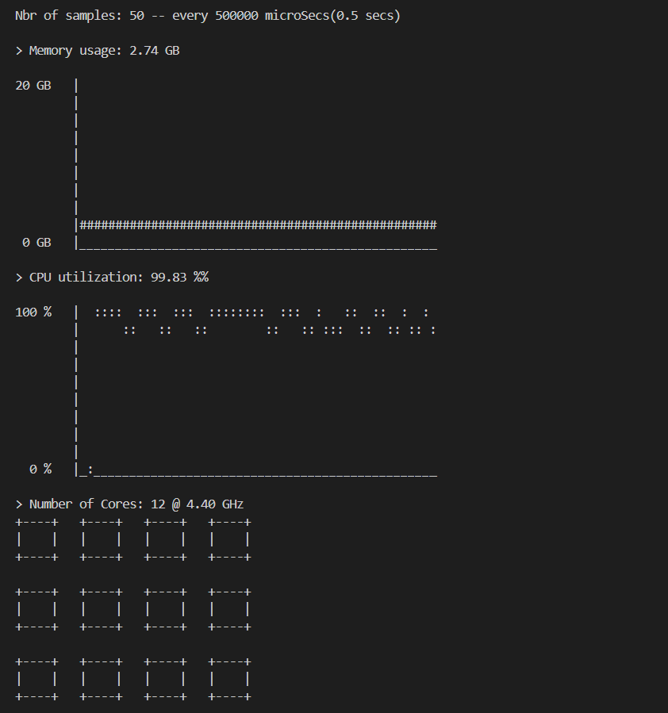

⊳ projects
⊳⊳ tool

⊳ projects
⊳⊳ tool
System Monitoring
tool for UNIX Systems
Languages used:
C
Software Used:
VSCode, UNIX Command Line
Project Details:
A Command Line UNIX tool which reports back Memory and Cpu utilization in Real-Time on
Graphs and also shows the total number of Physical Cores and Max CPU Frequency.
